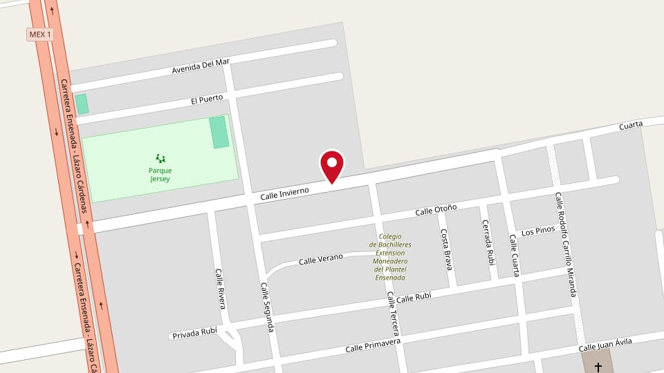
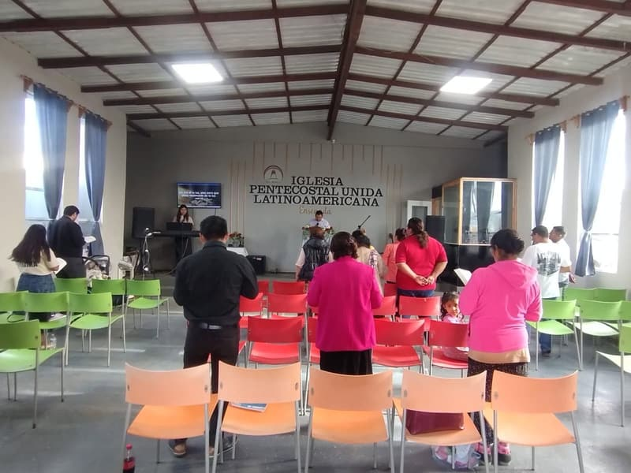
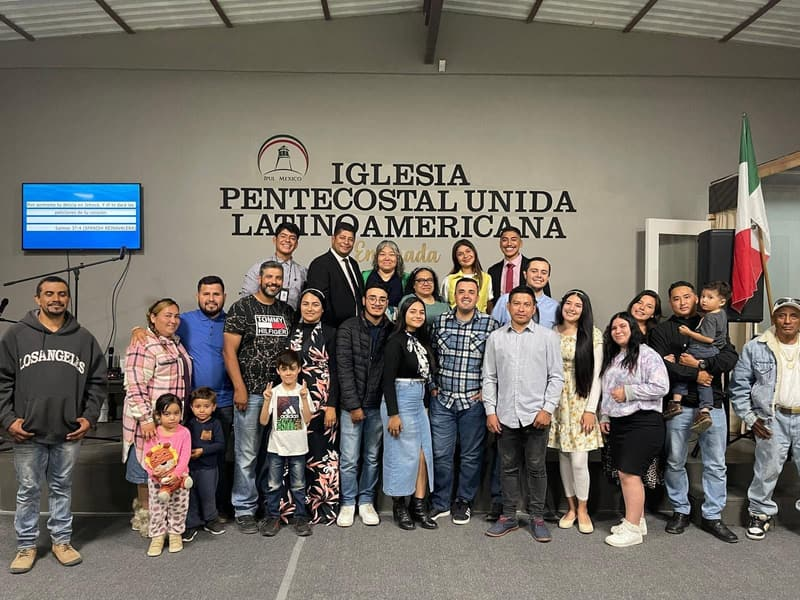
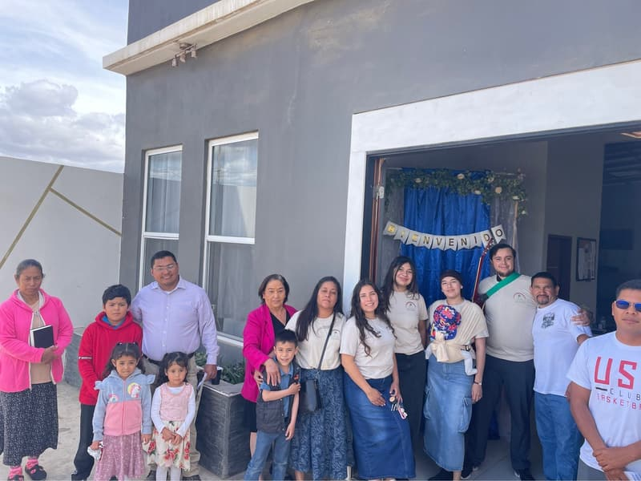
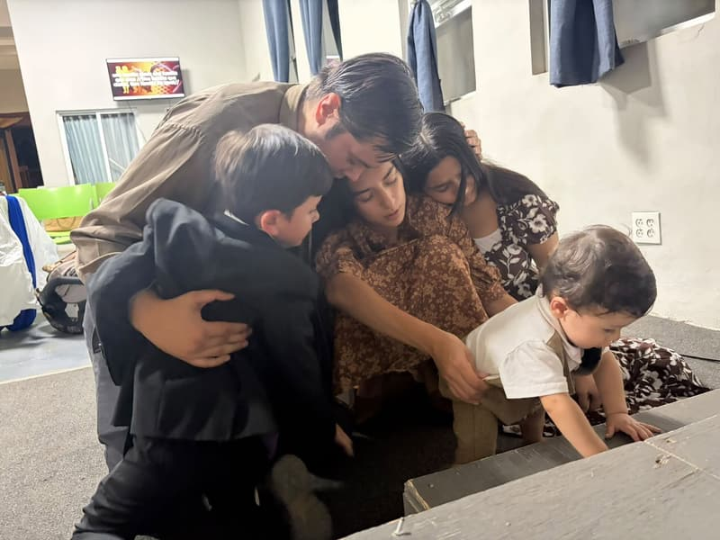
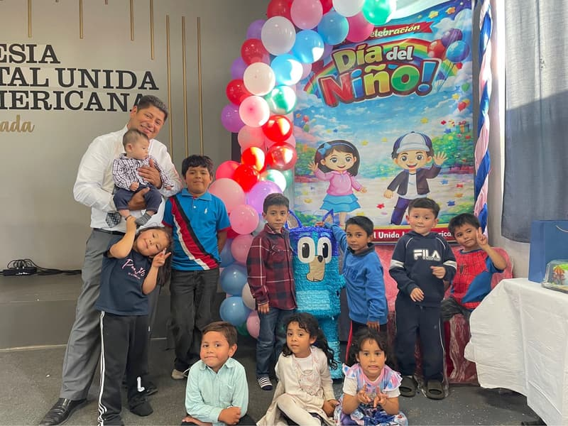

IPUL Ensenada
A congregation of IPUL México in Ensenada. Services are in Spanish. The sermon is translated into English on request, and presented materials are translated.
Where we meet
Calle Invierno #204, Maneadero, Ensenada, Baja California, 22790.
Service times
- Sunday, 5:00 pm. Worship service.
- Tuesday, 7:30 pm. Bible study service.
- Thursday, 7:30 pm. Prayer service.





Children's message
During the sermon in the Sunday service, children have a message of their own.

Pastor
Pastor Leonardo Hernández
Welcome. Whether you are looking for a church, for answers, or for someone to pray with you, we are glad you are here. Jesus is at the center of everything we do, and you are welcome to come and meet Him with us.